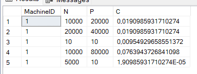
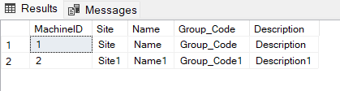

Last Rush
La Fin
Après avoir achevé toutes les étapes préliminaires, nous avons enfin pu nous lancer dans le travail concret. Gustavo et moi avons réparti les tâches : je me chargerai de la partie machines, tandis que Gustavo s'occupera de la section matières.
Mon objectif était d'ajouter les fonctionnalités d'ajout, de modification et de suppression des machines. Comme tout était à construire, cela incluait également la gestion de la base de données et de tout ce qui s'y rapporte.
 J'ai choisi de réutiliser plusieurs fois les mêmes pages avec des fonctionnalités différentes, ce qui nous a permis de gagner un temps considérable de manière simple et efficace. Une fois les visuels des différentes pages finalisés, il a fallu se concentrer sur l'aspect fonctionnel.

L'ajout des machines s'est déroulé presque sans encombre. Cependant, un problème est survenu lors de la modification des données. Malgré l'aide de Gustavo, nous avons passé tout un après-midi à essayer de résoudre ce problème, avant de tout reprendre à zéro et finalement réussir à le faire fonctionner correctement.
J'ai ensuite consacré la matinée à la finalisation de mon rapport de stage, profitant d'être sur place pour prendre les images et photos nécessaires à l'illustration de ce blog. Cela m'a également permis de passer du temps à discuter avec l'équipe.
Dans l'après-midi, j'ai terminé tous les points que j'avais commencés la veille sur le projet PRODPLUS, et nous avons tenu une dernière réunion de conclusion de stage avec Gustavo avant la fin de ce dernier.